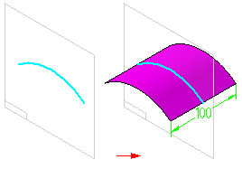
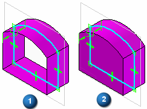
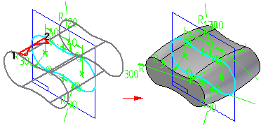

Extruded command
Use the Extruded surface command to create a construction surface by projecting a profile along a straight line. Options are available to control the extents of the surface.

When you create an extruded surface using a closed profile, you can use the Open Ends and Close Ends options on the command bar to specify whether the ends of the surface are open (1) or closed (2). When you set the Close Ends option, planar faces are added to the ends of the feature to create a closed volume.

When constructing extruded surface features, you can also apply draft angle or crowning to the faces on the feature that are defined by profile elements. For more information, see the Applying Draft Angle and Crowning to Features Help topic.
